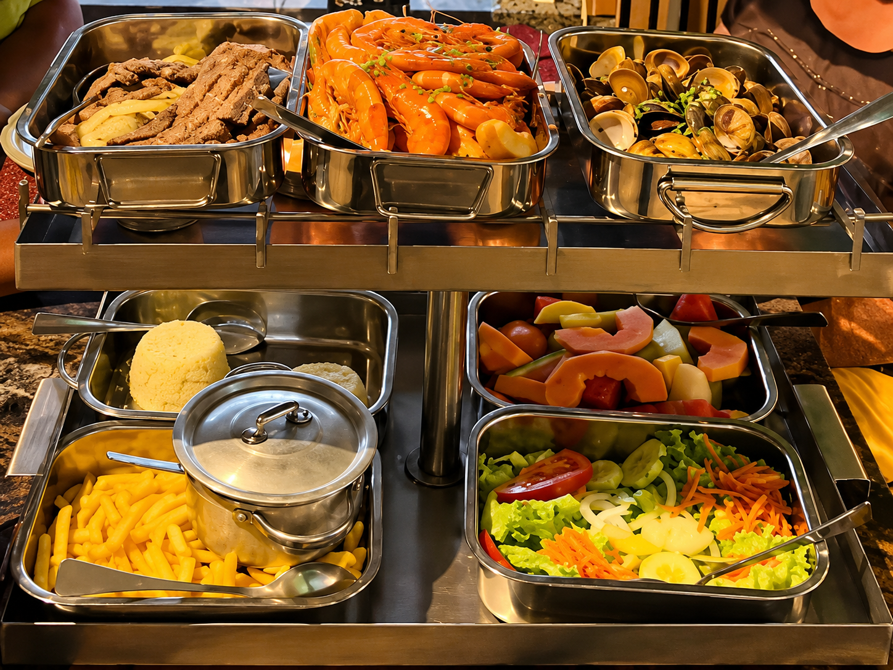

Casa dos Petiscos
O Ritual
Reservar

⚓ A especialidade da casa
Terra
e
Mar
"Só saem daqui quando comerem tudo"
Scroll
⚓ O Ritual
A Entrada do Chef
Vem Provar
Reserva a tua mesa e vive a experiência Terra e Mar
Reservar Mesa